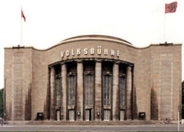

| News | ||
| 07.03.2008 | Television | |
|
At 09:15 Pm the episode of Soko Leipzig "Das Pessach-Fest" will be screened on ZDF. This episode was directed by Sebastian Vigg |
||
| 06.11.2007 |
The Film "Stauffenberg" by Jo Baier will be shown on November, 10th at 8:15 PM on SWR. |
|
| 02.04.2008 | Theatre  At the moment I am acting at the Volksbühne Berlin in the play "Der Selbstmörder" which is directed by Dimiter Gotscheff. Next shows will be in february. more Informationen on www.volksbuehne-berlin.de. |
|